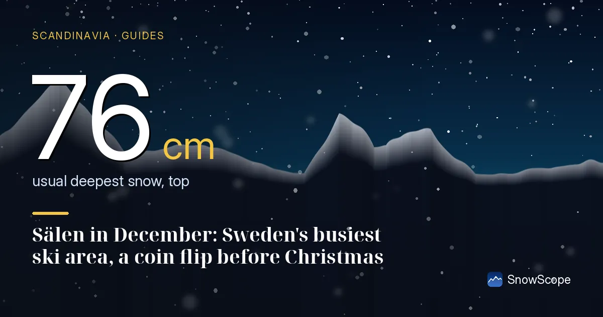

Sälen in December: Sweden's busiest ski area, a coin flip before Christmas
Sälen is where much of Sweden learns to ski: 80 km of mapped runs and 96 lifts spread over low, rounded hills. In December our 46 winters of snow history are blunt about it. On a typical 15 December the area has 28 cm, and in the week of 15-21 December only 48 % of winters had 30 cm or more.
See the live snow forecast for Sälen in the SnowScope appSnow depth, powder alerts and the 3D map, free.
December, then and now
Sälen's lifts run between 568 m and 886 m, and the hills are so smooth that our history gives one value for the whole area. That value has slipped: the December average fell from 33 cm in the first 15 winters to 24 cm in the last 15, and the share of Christmas weeks with 30 cm dropped from 80 % to 47 %.
Last winter was a clear example: 16 cm on 15 December and 4 cm on 24 December.


The weeks that still deliver
Christmas week is the best bet, with 61 % of winters at 30 cm or more. Before that, the odds are 35 % in each of the first two weeks and 48 % in 15-21 December. The usual first day with 30 cm is 17 December, right before the holidays.
Sälen is never deep in December (only 11 % of Christmas weeks had 60 cm or more), but it is rarely bare: in none of our 46 winters was the ground bare on 15 December. Without the resort's own work on the runs, though, a thin cover is the normal December picture.
The price for the week
Sälen's lift passes are sold with dynamic prices in its operator's official online shop. On 13 November 2026 we could not read a fixed number on the official page, so we quote none. The price will vary with your dates; buy early and online.
Trysil in the same years
Trysil, just across the Norwegian border, is the better December choice nearby. Its mid-mountain (758 m) has 44 cm on a typical 15 December, and 83 % of winters had 30 cm there in the week of 15-21 December. Its top at 1109 m is higher than anything in Sälen.
It too lost snow over the years, but from a higher level: in Christmas week 80 % of the last 15 winters still had 30 cm at mid-mountain.
Booking tips
If you love Sälen for its family set-up, go in late December or, better, in January and February. If December is the only option, look at the resort's live snow report a week before, or drive on to Trysil.
Tips for skiers
- Choose Christmas week over earlier dates: 61 % of our winters had 30 cm then, against 35 % in early December.
- Book something you can change: in recent winters the share of good Christmas weeks fell to 47 %.
- Compare with Trysil before you pay: its mid-mountain had 30 cm in 83 % of winters in mid-December.
- Short days and cold: plan the skiing around the light hours and dress children warmly.
More maps (external sites)
References and credits
- Sälen: official lift-pass page of the operator (prices by date; no fixed price quoted), checked 13 November 2026 www.skistar.com/en/winter/skipass/buy-skipass/lift-pass-salen/
- Trysil: official lift-pass page of the operator (prices by date; no fixed price quoted), checked 13 November 2026 www.skistar.com/en/winter/skipass/buy-skipass/lift-pass-trysil/
About these numbers
Snow numbers: SnowScope snow history, 46 past winters (1980-81 to 2025-26) at the resort's heights, corrected for height (an estimate for an area, not resort reports); 'good snow' = 30 cm or more on the ground as the week's average. Map: our typical depth on 15 December spread over the terrain by height. Runs and lifts: OpenSkiMap mapping. Lift-pass prices: the resorts' official price lists, checked on 13 November 2026; prices can change.
Official avalanche bulletins: Lavinprognoser (Naturvårdsverket)
Cite this report
For research, teaching or the press: the numbers and charts are free to reuse under CC BY 4.0 with this citation.
SnowScope (2026), Sälen in December: Sweden's busiest ski area, a coin flip before Christmas, https://snowscope.app/blog/en/2026/11/salen-december-ski-trip-honest-snow-cost.html, accessed 2026-11-14
SnowScope (Atlas Labs). (2026, November 14). Sälen in December: Sweden's busiest ski area, a coin flip before Christmas. SnowScope snow reports. https://snowscope.app/blog/en/2026/11/salen-december-ski-trip-honest-snow-cost.html
BibTeX
@misc{snowscope2026salendecemberskitriphone,
author = {{SnowScope (Atlas Labs)}},
title = {Sälen in December: Sweden's busiest ski area, a coin flip before Christmas},
year = {2026},
month = nov,
howpublished = {\url{https://snowscope.app/blog/en/2026/11/salen-december-ski-trip-honest-snow-cost.html}},
note = {Published 2026-11-14 19:44 UTC; accessed 2026-11-14}
}· CC BY 4.0 · Methods, data and tools →
Sälen: snow and temperature by height, this winter vs last (tools) →
Follow Sälen
Free: a message when fresh snow is coming, and the forecast every morning.
More snow reports

Les Karellis offers 45 km of runs and a 6-day adult pass for 191.00 EUR with a 98 % chance of snow mid-mountain in late December.

Les 2 Alpes reaches 3511 m for high snow in December 2026, with an adult 6-day pass priced at 266.50 EUR.

Pick a region, dates, budget and what matters; get every resort ranked with the likely snow at the start, the pass, hotel and food per person, chalets to book, and a game mode.